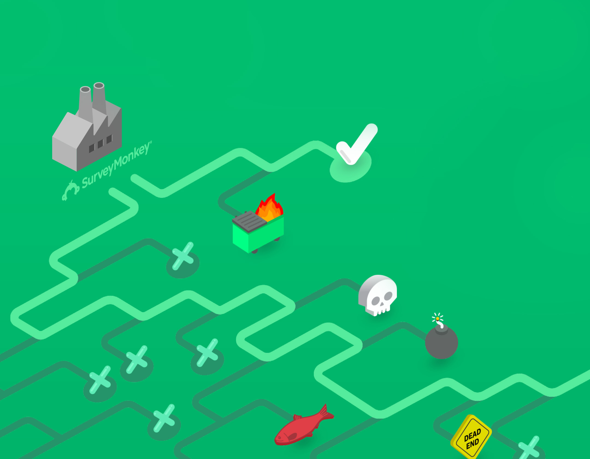

SurveyMonkey Graphics
Transitioning from the Momentive era, through the more recent days of the SurveyMonkey reorg I was tasked with creating a number of graphics for GTM decks, internal comms and animated graphics.

ROLE
Principal / Design Director
Designed sales and ticketing systems.
Designed digital experience for live events.
Supported marketing and growth initiatives.
TEAM
1 Principal / Design Director
1 Marketing Designer
7 Engineers
1 Product Manager
IMPACT
Grew from $0 in revenue to over $32 Million in two years.
Run rate over $50 Million in 2020.
Run rate over $50 Million in 2020.